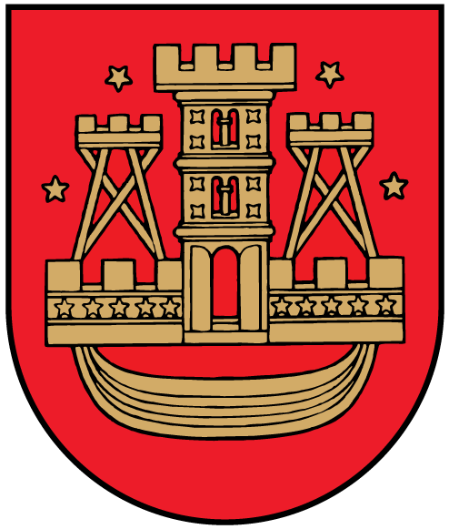

Main facts
- Population: 149157
- Mayor: Vytautas Grubliauskas
- Gross Metropolitan Product: 5.3 bil EUR
- Ethnographic region: Lithuania Minor
- Size rank in Lithuania: 3
- Timezone of the city: UTC+2
Vytautas Grubliauskas was born in Klaipeda on December 1st 1956. graduated from the Lithuanian State Conservatoire Klaipėda Faculties, Department of Popular Music, majoring in trumpet. Served in the Soviet Army as the soloist and concertmaster of the exemplary Baltic Headquarters orchestra in Riga, Latvia. Worked as a lecturer at the Lithuanian State Conservatoire Klaipėda Faculty, Department of Popular Music. In year 2000 he was elected into the Klaipeda city council. In 2004 he was elected to Lithuanian parliament (Seimas). In 2011 he was elected as mayor of Klaipeda. Reelected for mayor in 2015 and 2019.
Coat of Arms of Klaipeda
Logo of Klaipeda
Video demonstrating what can be done in Klaipeda.